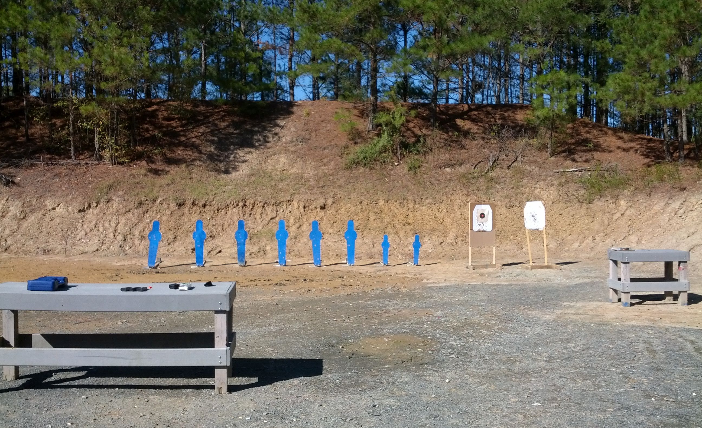

I volunteered for another WOT (NRA Women on Target) event last Sunday. The write up on my first experience at Sir Walter Gun Club is here. For the first time I felt confident about coaching non-shooters and that made a big difference. We had many more volunteers than last April so the instructors switched off quite a bit. No one had to teach back-to-back-to-back students and we all spent time instructing.
Last April I listened to a seasoned instructor coach about 25 students in a row. He was so consistent in how he walked the women shooters through the process that I taped him coaching a student. I transcribed the recording (the audio quality was poor), used that as a script, then recorded my own version. The night before this event I listened through the recording a few times. It worked well for me. The coach I emulated advocates the bare minimum to get a shooter started so she can focus on 2-3 things and no more. We allocated two 9 round magazines per student. They started with 8 steel targets that (were supposed to) drop when hit. Then we moved them up a bit closer, to the smaller table, and let them shoot a paper target. It’s always fun to send them home with visual reminders of their success.
Every one of my ladies dropped at least one steel target and got at least one shot on the paper target.
The weather was great! No freezing like in April. But I was prepared this time.
Of note:
- One lady insisted the gun was malfunctioning after trying to press the trigger and not getting a bang. It looked fine to me and I asked her to try again. She did. No bang. She asked me to try shooting it… so I did. And I hit the bullseye circle on the target. When you are supposed to be the expert, it is affirming to see successful skills in action. She tried again and the gun did go bang. I think her finger was just fatigued from shooting the steel.
- I saw an out-of-battery malfunction in several cases. It’s a matter of poor technique when racking the slide and easy to correct: just tap the back of the slide forward.
- I realized that some ladies have a great attitude and are thrilled with any positive experience, while others will never be satisfied with their performance. Guess who had a better day?
We know how to have fun at WOT events!
And finally, the biggest lesson for me was after the students left. The instructors took a run at the steel targets. Someone volunteered her Glock and we all had a go. The trigger was lighter than I was used to and, although I managed to hit each steel plate, the gun went off before I intended. I started taking up the slack in the trigger as I lined up my shot and I was used to a different trigger. My bad.
The gun was pointed down range and I hit my target but I realized I needed to slow down and pay more attention when the equipment is unfamiliar. I have learned to warn friends that the trigger is light when I hand them my 1911 to shoot. I need to take my own advice and be more cautious with unfamiliar equipment.
If you know a women interested in spending a day trying at least 5 different shooting sports, the local WOT events are a fabulous opportunity. At Sir Walter Gun Club they offer two types of pistol, two types of rifle and skeet for the ladies during a WOT event. The events run locally in March/April and October/November.

{kind=link}
{kind=link}
{kind=link}